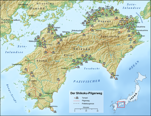
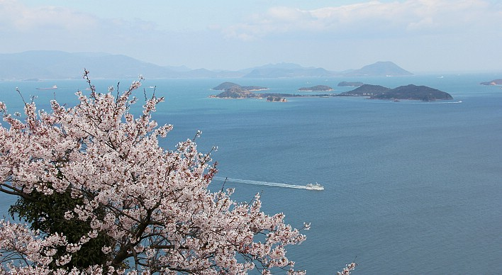

Willkommen Sie auf unserer Webseite. Wir widmen uns dem Thema japanische Inseln.
Japan hat 4 grösste Inseln - hier befindet sich die Liste. Nach dem Klick werden Sie automatisch auf die Website der gewünschten Insel weitergeleitet.
Diese Website beschäftigt sich mit der Insel Shikoku.
Mit ungefähr 18.800 Quadratkilometern Fläche und 4,1 Millionen Einwohnern ist Shikoku die kleinste der vier japanischen Hauptinseln. Der Name Shikoku bedeutet soviel wie vier Provinzen und gliedert sich dementsprechend in vier unterschiedliche Präfekturen, Ehime, Kagawa, Kochi, und Tokushima. Die meisten Einwohner leben im Norden der Insel und mit einer Ausnahme befinden sich dort auch die größten Städte. Der Süden der Insel ist gebirgig und weist daher eine geringe Besiedlung auf. Aufgrund des milden Winters wird auf Shikoku viel Gemüse angebaut und Reisanbau ist ebenfalls weit verbreitet. Verbunden ist Shikoku mit der Hauptinsel Öffnet einen internen Link im aktuellen FensterHonshu über die Seto-Brücke, welche 13 Kilometer lang ist. Zudem kann Shikoku per Fähre oder Flugzeug erreicht werden.
Quellen: